Multimodal GCN for Alzheimer's Detection (ADNI)
Python
PyTorch Geometric
GNNs
MRI / fMRI
HPC
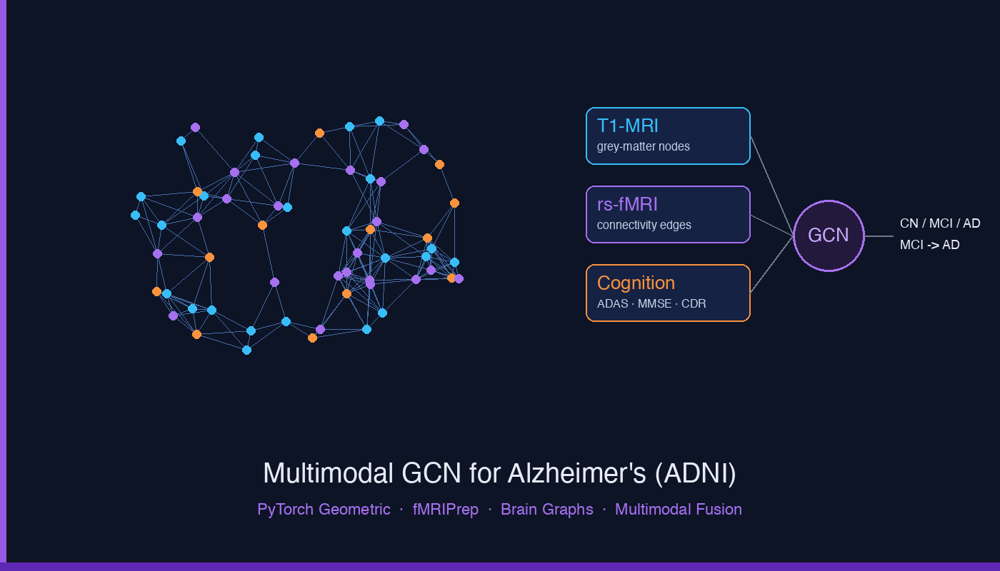
Multimodal GCN (ADNI)
MSc dissertation: an end-to-end pipeline turning raw ADNI DICOMs into 114-region brain graphs, with a multimodal Graph Convolutional Network fusing T1-MRI, resting-state fMRI connectivity, and cognitive scores to diagnose CN / MCI / AD and predict MCI-to-AD conversion.
View on GitHub
SimpleSense
Python
FastAPI
Spring Boot
Ollama LLMs
NLP
Multi-service application that analyses, classifies, and simplifies complex medical and legal documents, combining a FastAPI ML classifier, a local Ollama LLM service, a Spring Boot backend, and a web UI.
View on GitHub
GenAI-Based UI Testing Solution
Python
Flask
LLMs
RAG
REST APIs
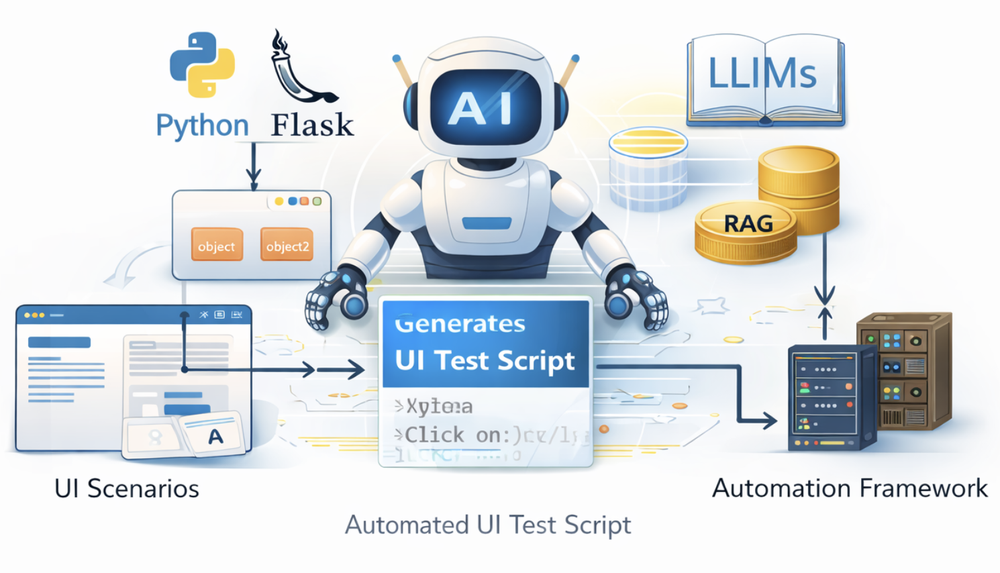
Add project image
Built a Python/Flask tool that uses LLMs to generate UI test scripts from object repositories and scenarios, cutting manual script creation time by ~50% and improving consistency across teams.
Test Script Migration Framework
Python
Selenium
Streamlit
FastAPI
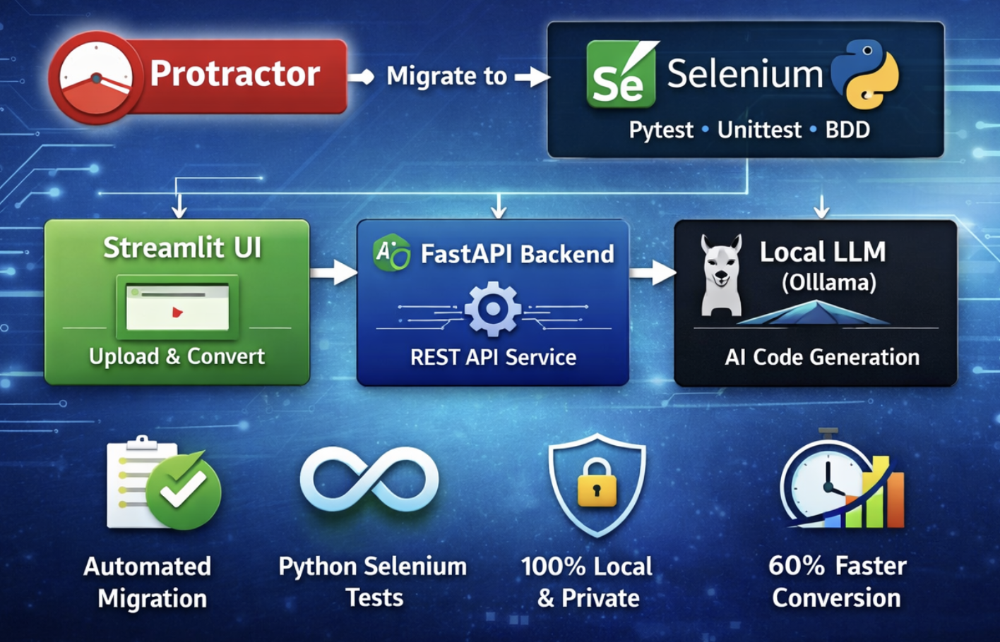
Add project image
Framework with AST-aware parsing and LLM prompt chaining that migrates legacy Protractor tests to Python Selenium, handling 90% of migration patterns automatically. Separate parsing, inference and code-generation modules with automated tests cut migration errors by 75% across 500+ test scripts.
View on GitHub
Malicious Activity Detection on Social Media
Python
NLP
ML
OCR
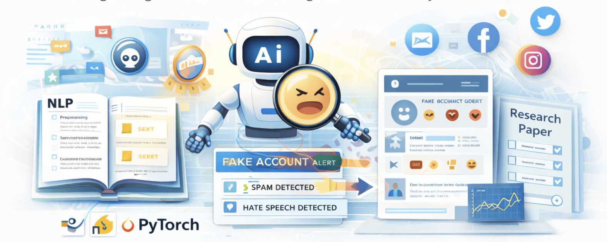
Add project image
Built an ML + NLP pipeline to detect spam, fake accounts, and hate speech with strong classification performance using engineered features and model evaluation metrics.
View on GitHub
Human Activity Recognition Using Wearable Sensors
Python
Time-Series
ML
CNN
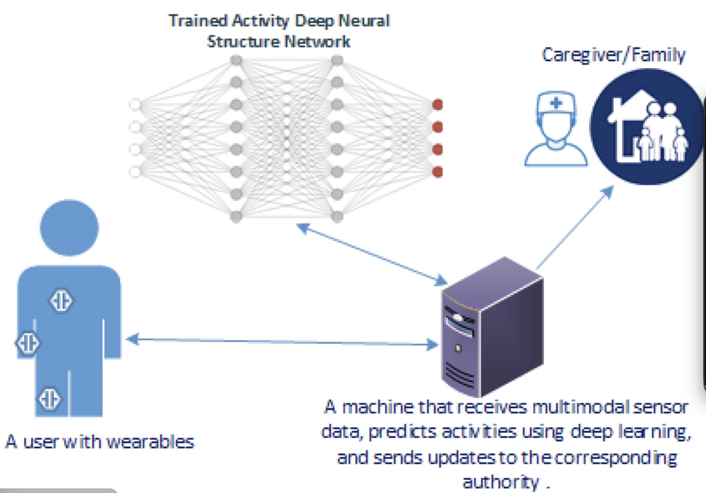
Add project image
Implemented a full HAR pipeline on accelerometer data with windowing, feature engineering, and model comparisons (GMM, Random Forest, CNN) using macro-F1 and confusion matrices.
View on GitHub
QR-Based Healthcare System
Python
OpenCV
SQLite
React
Flask
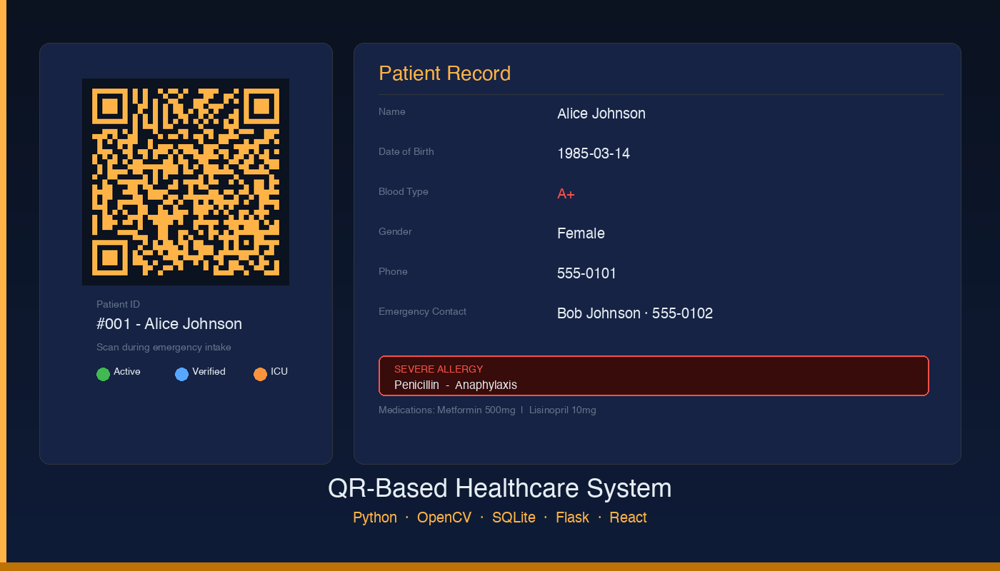
QR Healthcare System
QR code generation and live webcam scanning with OpenCV for rapid emergency patient intake. Patient history, conditions, and allergies stored in SQLite, served via a Flask REST API, with a Tkinter desktop scanner and React web dashboard.
View on GitHub
NLP Road Map
Python
NLP
BERT
LLaMA
CRF
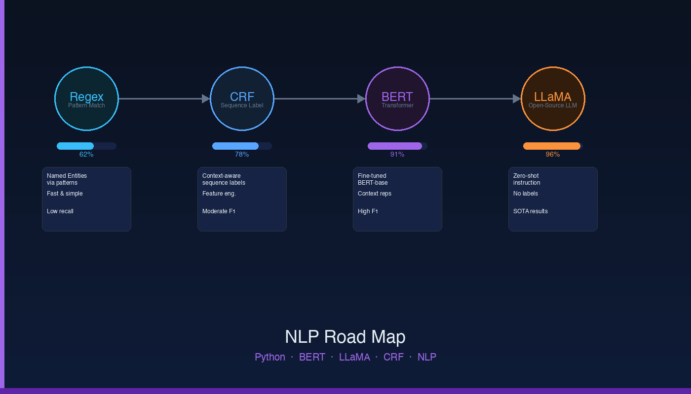
NLP Road Map
Progressive NLP lab series benchmarking techniques from regex-based extraction through CRF-based NER to fine-tuned BERT and open-source LLaMA — comparing accuracy, latency, and generalisation across each stage.
View on GitHub
CrawlAI RAG
Python
RAG
LangChain
ChromaDB
FastAPI
Python crawler that indexes 100+ pages into a ChromaDB vector database, served by a containerised FastAPI service with LangChain retrieval chains. Reaches 95% answer accuracy on domain queries, cites the source pages behind each answer, and cut search time by 40%.
View on GitHub
Music Source Separation
Python
PyTorch
Deep Learning
Audio DSP
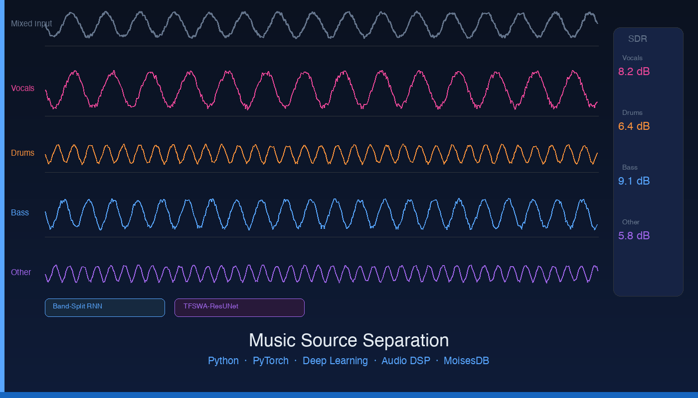
Music Source Separation
Comparative study of Band-Split RNN and TFSWA-ResUNet for music source separation on MoisesDB. Evaluated separation quality via SDR and perceptual metrics, analysing architecture trade-offs across vocals, drums, and bass (COMP6252).
View on GitHub
Music Genre Classification
Python
Deep Learning
Audio Features
Classification
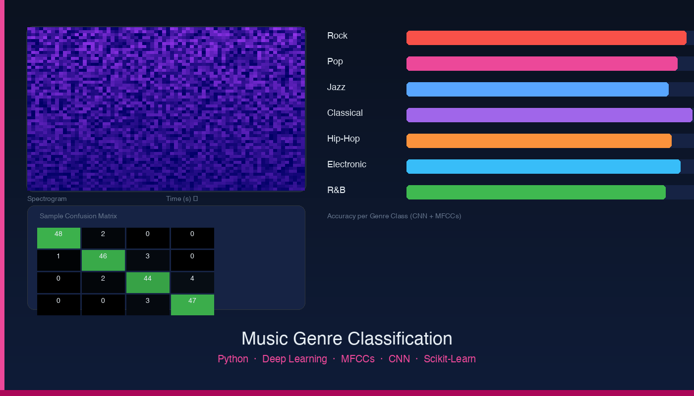
Music Genre Classification
Deep learning pipeline for automatic music genre classification using MFCCs and spectrogram features. Trained and evaluated CNN-based classifiers across multiple genre categories (COMP6252).
View on GitHub
Database Query Optimiser
Java
SQL
Query Planning
Cost Estimation
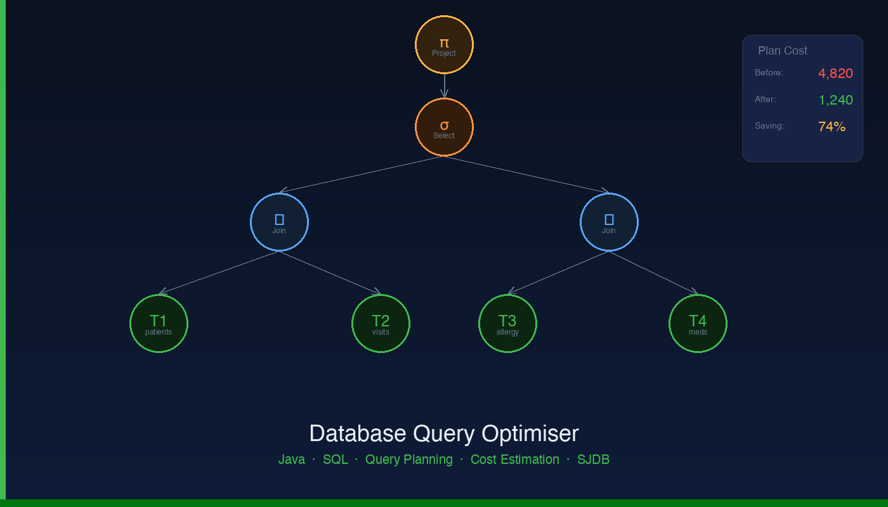
Database Query Optimiser
Two Java modules for a relational database engine (SJDB): a cost estimator and a greedy left-deep join optimiser that compares join orders to produce efficient SQL query plans, built with clear, testable object-oriented classes for each stage.
View on GitHub
Voices from the Past
TypeScript
Audio
Hackathon
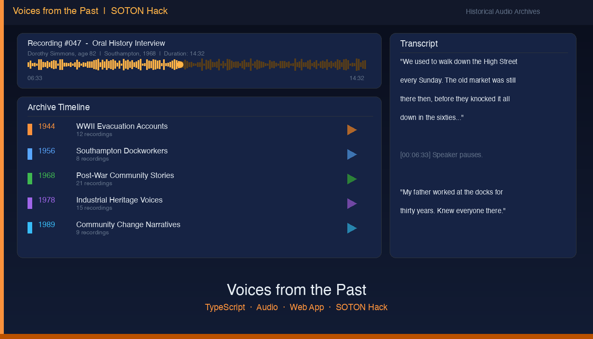
Voices from the Past
Built at SOTON Hack — a TypeScript web application that surfaces and preserves historical audio recordings, making archival voices and oral histories accessible through a modern interface.
View on GitHub